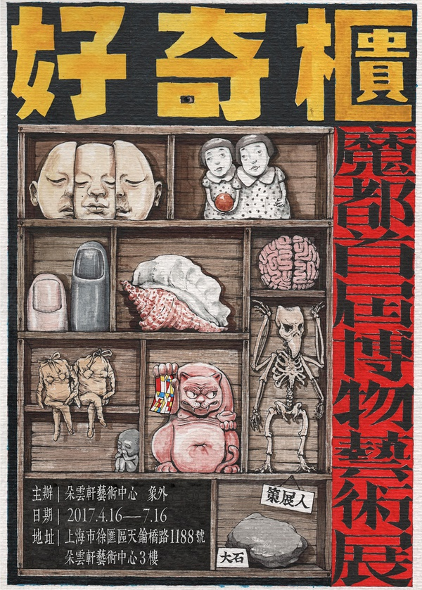

好奇柜 | 魔都首届博物艺术展
BY 路人甲
周日 (06月04日) 10:00-20:00
地点: 上海 徐汇区 徐汇区天钥桥路1188号朵云轩艺术中心3楼
费用: 50 - 100元
类型: 展览
主办方: 周末去哪儿
展览介绍 好奇柜——魔都首届博物艺术展
人类的两个天性：好奇心和占有欲，催生了一种叫“收藏”的行为。在古巴比伦、古希腊还有古罗马时期就已经有人开始针对经济、宗教、神学、历史、美学等各个领域展开收藏。但是直到14世纪的文艺复兴，在人文主义的思潮下，人们才开始对收藏进行真正系统性的保护还有研究——由此形成了现代意义上对博物馆的定义，并且诞生了现代意义上博物馆的原型——好奇柜（Cabinet of Curiousties）。如今，好奇柜在公共视线中被博物馆取代，但并没有因此消亡。
今年春夏，由策展人大石发起，朵云轩艺术中心与艺术自媒体象外联合主办，共同召集全国近百名怪咖藏家艺术家举办一次别开生面的博物艺术展，在魔都上海重现欧洲历史上的瑰丽奇诡的好奇柜，淋漓尽致的还原由“好奇心”与“占有欲”这两种人类天性催生而成的独特“收藏展“。
